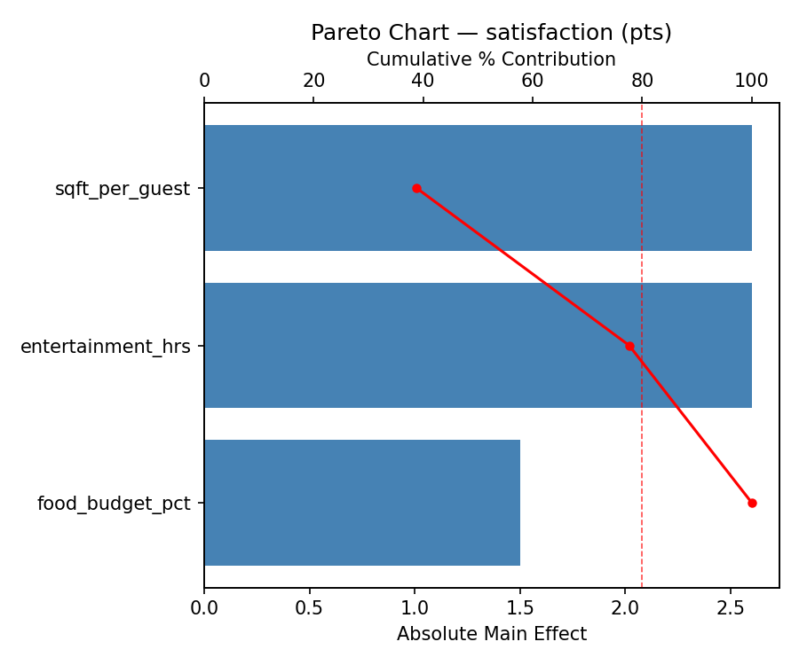
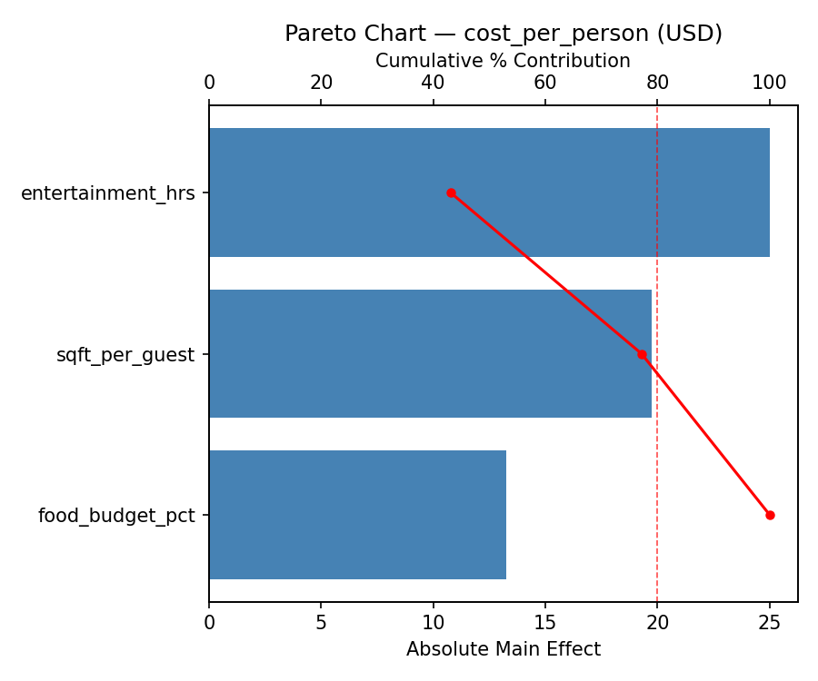
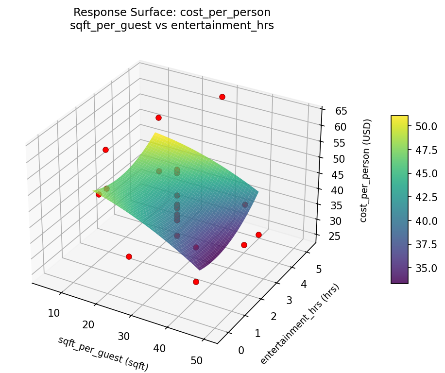
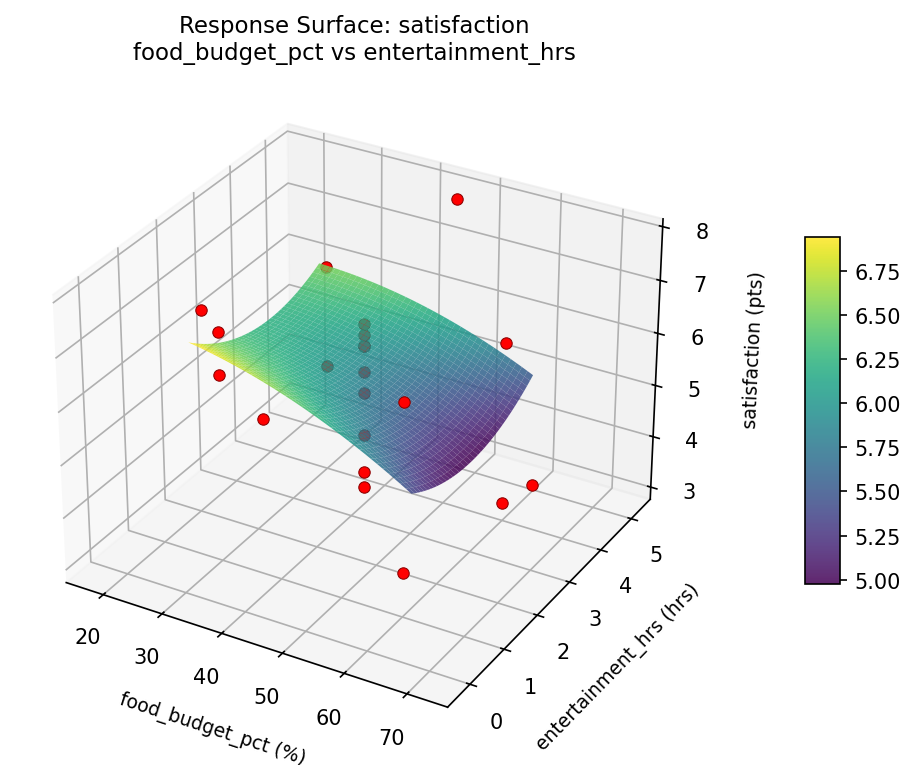
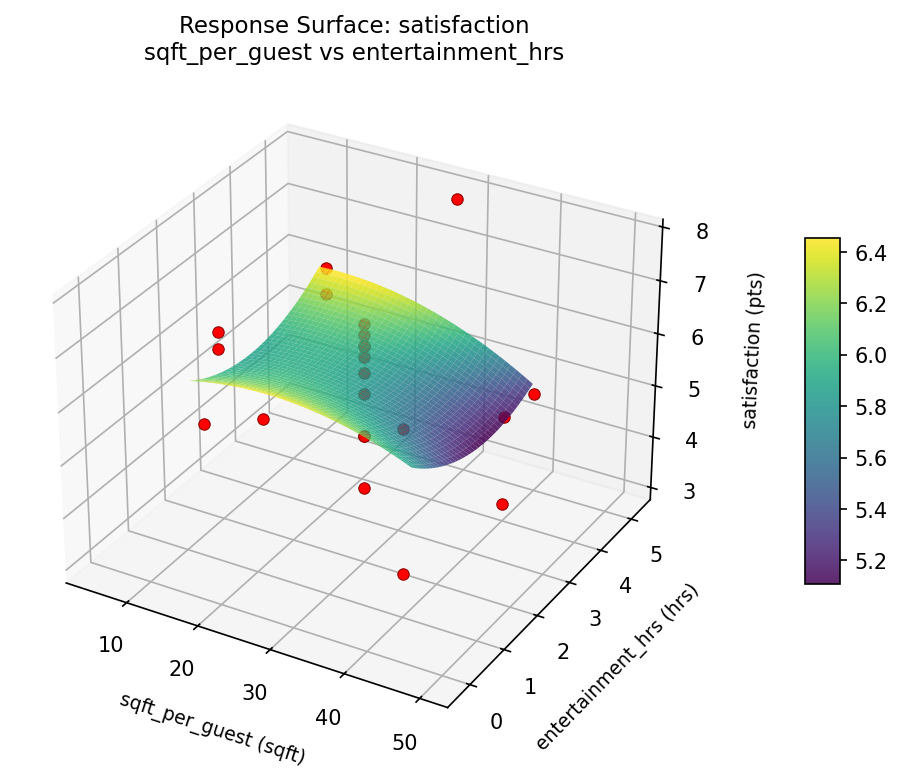

Experimental Setup
Factors
| Factor | Low | High | Unit |
|---|
sqft_per_guest | 15 | 40 | sqft |
food_budget_pct | 30 | 60 | % |
entertainment_hrs | 1 | 4 | hrs |
Fixed: guests = 50, event_type = birthday
Responses
| Response | Direction | Unit |
|---|
satisfaction | ↑ maximize | pts |
cost_per_person | ↓ minimize | USD |
Configuration
{
"metadata": {
"name": "Party Planning Optimization",
"description": "Central composite design to maximize guest satisfaction and minimize cost per person by tuning venue size, food budget ratio, and entertainment hours"
},
"factors": [
{
"name": "sqft_per_guest",
"levels": [
"15",
"40"
],
"type": "continuous",
"unit": "sqft"
},
{
"name": "food_budget_pct",
"levels": [
"30",
"60"
],
"type": "continuous",
"unit": "%"
},
{
"name": "entertainment_hrs",
"levels": [
"1",
"4"
],
"type": "continuous",
"unit": "hrs"
}
],
"fixed_factors": {
"guests": "50",
"event_type": "birthday"
},
"responses": [
{
"name": "satisfaction",
"optimize": "maximize",
"unit": "pts"
},
{
"name": "cost_per_person",
"optimize": "minimize",
"unit": "USD"
}
],
"settings": {
"operation": "central_composite",
"test_script": "use_cases/198_party_planning/sim.sh"
}
}
Experimental Matrix
The Central Composite Design produces 22 runs. Each row is one experiment with specific factor settings.
| Run | sqft_per_guest | food_budget_pct | entertainment_hrs |
|---|
| 1 | 27.5 | 45 | 2.5 |
| 2 | 40 | 30 | 4 |
| 3 | 15 | 60 | 1 |
| 4 | 27.5 | 72.3861 | 2.5 |
| 5 | 27.5 | 45 | 2.5 |
| 6 | 4.67823 | 45 | 2.5 |
| 7 | 27.5 | 45 | -0.238613 |
| 8 | 27.5 | 45 | 2.5 |
| 9 | 40 | 60 | 1 |
| 10 | 50.3218 | 45 | 2.5 |
| 11 | 27.5 | 45 | 2.5 |
| 12 | 27.5 | 17.6139 | 2.5 |
| 13 | 27.5 | 45 | 2.5 |
| 14 | 15 | 30 | 4 |
| 15 | 27.5 | 45 | 2.5 |
| 16 | 40 | 30 | 1 |
| 17 | 27.5 | 45 | 5.23861 |
| 18 | 40 | 60 | 4 |
| 19 | 27.5 | 45 | 2.5 |
| 20 | 15 | 30 | 1 |
| 21 | 15 | 60 | 4 |
| 22 | 27.5 | 45 | 2.5 |
Step-by-Step Workflow
1
Preview the design
$ python doe.py info --config use_cases/198_party_planning/config.json
2
Generate the runner script
$ python doe.py generate --config use_cases/198_party_planning/config.json \
--output use_cases/198_party_planning/results/run.sh --seed 42
3
Execute the experiments
$ bash use_cases/198_party_planning/results/run.sh
4
Analyze results
$ python doe.py analyze --config use_cases/198_party_planning/config.json
5
Get optimization recommendations
$ python doe.py optimize --config use_cases/198_party_planning/config.json
6
Generate the HTML report
$ python doe.py report --config use_cases/198_party_planning/config.json \
--output use_cases/198_party_planning/results/report.html
Features Exercised
| Feature | Value |
|---|
| Design type | central_composite |
| Factor types | continuous (all 3) |
| Arg style | double-dash |
| Responses | 2 (satisfaction ↑, cost_per_person ↓) |
| Total runs | 22 |
Analysis Results
Generated from actual experiment runs using the DOE Helper Tool.
Response: satisfaction
Top factors: sqft_per_guest (38.8%), entertainment_hrs (38.8%), food_budget_pct (22.4%).
Pareto Chart

Main Effects Plot

Response: cost_per_person
Top factors: entertainment_hrs (43.1%), sqft_per_guest (34.1%), food_budget_pct (22.8%).
Pareto Chart

Main Effects Plot

Response Surface Plots
3D surfaces fitted with quadratic RSM. Red dots are observed data points.
cost per person food budget pct vs entertainment hrs

cost per person sqft per guest vs entertainment hrs

cost per person sqft per guest vs food budget pct

satisfaction food budget pct vs entertainment hrs

satisfaction sqft per guest vs entertainment hrs

satisfaction sqft per guest vs food budget pct

Full Analysis Output
RSM surface: rsm_satisfaction_sqft_per_guest_vs_food_budget_pct.png
RSM surface: rsm_satisfaction_sqft_per_guest_vs_entertainment_hrs.png
RSM surface: rsm_satisfaction_food_budget_pct_vs_entertainment_hrs.png
RSM surface: rsm_cost_per_person_sqft_per_guest_vs_food_budget_pct.png
RSM surface: rsm_cost_per_person_sqft_per_guest_vs_entertainment_hrs.png
RSM surface: rsm_cost_per_person_food_budget_pct_vs_entertainment_hrs.png
=== Main Effects: satisfaction ===
Factor Effect Std Error % Contribution
--------------------------------------------------------------
sqft_per_guest 2.6000 0.2735 38.8%
entertainment_hrs 2.6000 0.2735 38.8%
food_budget_pct 1.5000 0.2735 22.4%
=== Summary Statistics: satisfaction ===
sqft_per_guest:
Level N Mean Std Min Max
------------------------------------------------------------
15 4 6.7000 0.3742 6.2000 7.1000
27.5 12 6.0333 1.1073 3.8000 7.8000
4.67823 1 4.1000 0.0000 4.1000 4.1000
40 4 4.4500 1.4248 3.1000 6.3000
50.3218 1 6.5000 0.0000 6.5000 6.5000
food_budget_pct:
Level N Mean Std Min Max
------------------------------------------------------------
17.6139 1 6.3000 0.0000 6.3000 6.3000
30 4 6.2250 1.0046 4.8000 7.1000
45 12 5.9917 1.1996 3.8000 7.8000
60 4 4.9250 1.8464 3.1000 6.8000
72.3861 1 4.8000 0.0000 4.8000 4.8000
entertainment_hrs:
Level N Mean Std Min Max
------------------------------------------------------------
-0.238613 1 6.7000 0.0000 6.7000 6.7000
1 4 5.9500 1.6010 3.6000 7.1000
2.5 12 5.7083 1.0706 3.8000 6.9000
4 4 5.2000 1.6145 3.1000 6.7000
5.23861 1 7.8000 0.0000 7.8000 7.8000
=== Main Effects: cost_per_person ===
Factor Effect Std Error % Contribution
--------------------------------------------------------------
entertainment_hrs 25.0000 2.1099 43.1%
sqft_per_guest 19.7500 2.1099 34.1%
food_budget_pct 13.2500 2.1099 22.8%
=== Summary Statistics: cost_per_person ===
sqft_per_guest:
Level N Mean Std Min Max
------------------------------------------------------------
15 4 52.2500 9.0692 41.0000 61.0000
27.5 12 42.6667 8.7421 31.0000 63.0000
4.67823 1 37.0000 0.0000 37.0000 37.0000
40 4 32.5000 7.0475 25.0000 39.0000
50.3218 1 39.0000 0.0000 39.0000 39.0000
food_budget_pct:
Level N Mean Std Min Max
------------------------------------------------------------
17.6139 1 41.0000 0.0000 41.0000 41.0000
30 4 49.0000 12.1929 38.0000 61.0000
45 12 42.5833 8.7330 31.0000 63.0000
60 4 35.7500 11.2361 25.0000 49.0000
72.3861 1 36.0000 0.0000 36.0000 36.0000
entertainment_hrs:
Level N Mean Std Min Max
------------------------------------------------------------
-0.238613 1 38.0000 0.0000 38.0000 38.0000
1 4 44.2500 14.0801 28.0000 61.0000
2.5 12 40.5833 6.0221 31.0000 52.0000
4 4 40.5000 13.5769 25.0000 58.0000
5.23861 1 63.0000 0.0000 63.0000 63.0000
Pareto chart (satisfaction): use_cases/198_party_planning/results/analysis/pareto_satisfaction.png
Pareto chart (cost_per_person): use_cases/198_party_planning/results/analysis/pareto_cost_per_person.png
Main effects (satisfaction): use_cases/198_party_planning/results/analysis/main_effects_satisfaction.png
Main effects (cost_per_person): use_cases/198_party_planning/results/analysis/main_effects_cost_per_person.png
Optimization Recommendations
=== Optimization: satisfaction ===
Direction: maximize
Best observed run: #18
sqft_per_guest = 27.5
food_budget_pct = 45
entertainment_hrs = 2.5
Value: 7.8
RSM Model (linear, R² = 0.1694, Adj R² = 0.0309):
Coefficients:
intercept +5.8000
sqft_per_guest +0.5134
food_budget_pct +0.2721
entertainment_hrs +0.2478
RSM Model (quadratic, R² = 0.3130, Adj R² = -0.2023):
Coefficients:
intercept +5.4553
sqft_per_guest +0.5134
food_budget_pct +0.2721
entertainment_hrs +0.2478
sqft_per_guest*food_budget_pct -0.2500
sqft_per_guest*entertainment_hrs -0.4750
food_budget_pct*entertainment_hrs +0.2500
sqft_per_guest^2 +0.1524
food_budget_pct^2 +0.0624
entertainment_hrs^2 +0.3024
Curvature analysis:
entertainment_hrs coef=+0.3024 convex (has a minimum)
sqft_per_guest coef=+0.1524 convex (has a minimum)
food_budget_pct coef=+0.0624 negligible curvature
Notable interactions:
sqft_per_guest*entertainment_hrs coef=-0.4750 (antagonistic)
Predicted optimum (from linear model):
sqft_per_guest = 40
food_budget_pct = 60
entertainment_hrs = 4
Predicted value: 6.8334
Model quality: Weak fit — consider adding center points or using a different design.
Factor importance:
1. entertainment_hrs (effect: 2.1, contribution: 37.1%)
2. sqft_per_guest (effect: 2.0, contribution: 36.2%)
3. food_budget_pct (effect: 1.5, contribution: 26.8%)
=== Optimization: cost_per_person ===
Direction: minimize
Best observed run: #20
sqft_per_guest = 27.5
food_budget_pct = 45
entertainment_hrs = 2.5
Value: 25.0
RSM Model (linear, R² = 0.0303, Adj R² = -0.1313):
Coefficients:
intercept +42.1364
sqft_per_guest +1.7846
food_budget_pct +1.0315
entertainment_hrs -0.0176
RSM Model (quadratic, R² = 0.2002, Adj R² = -0.3997):
Coefficients:
intercept +42.9258
sqft_per_guest +1.7846
food_budget_pct +1.0315
entertainment_hrs -0.0175
sqft_per_guest*food_budget_pct -0.5000
sqft_per_guest*entertainment_hrs -2.0000
food_budget_pct*entertainment_hrs -0.2500
sqft_per_guest^2 -2.9447
food_budget_pct^2 -0.5447
entertainment_hrs^2 +2.3053
Curvature analysis:
sqft_per_guest coef=-2.9447 concave (has a maximum)
entertainment_hrs coef=+2.3053 convex (has a minimum)
food_budget_pct coef=-0.5447 concave (has a maximum)
Notable interactions:
sqft_per_guest*entertainment_hrs coef=-2.0000 (antagonistic)
sqft_per_guest*food_budget_pct coef=-0.5000 (antagonistic)
Predicted optimum (from linear model):
sqft_per_guest = 50.3218
food_budget_pct = 45
entertainment_hrs = 2.5
Predicted value: 45.3946
Model quality: Weak fit — consider adding center points or using a different design.
Factor importance:
1. entertainment_hrs (effect: 26.0, contribution: 51.2%)
2. food_budget_pct (effect: 12.5, contribution: 24.6%)
3. sqft_per_guest (effect: 12.2, contribution: 24.1%)